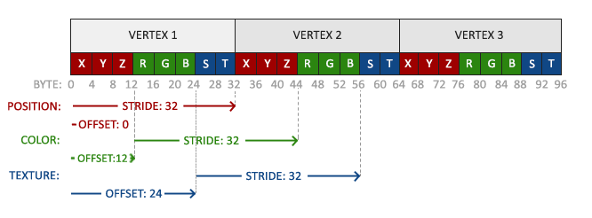
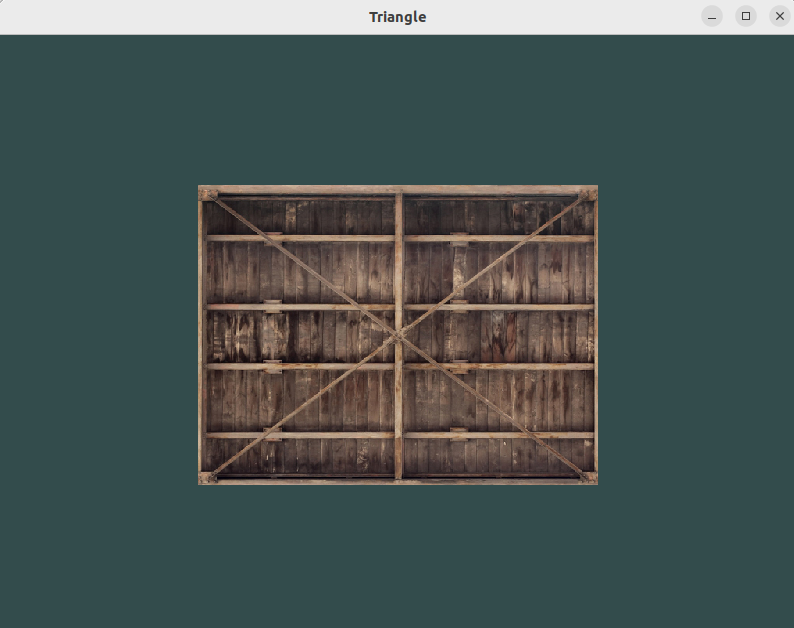
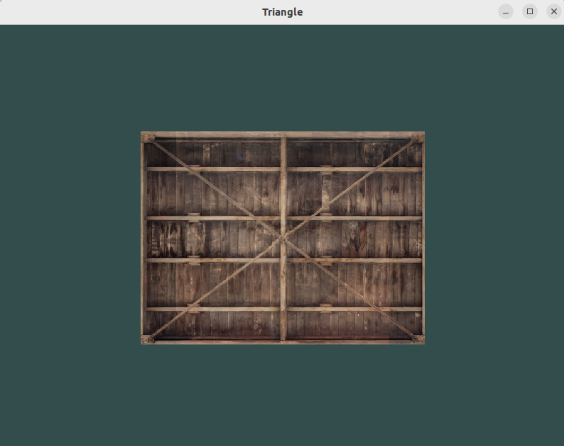
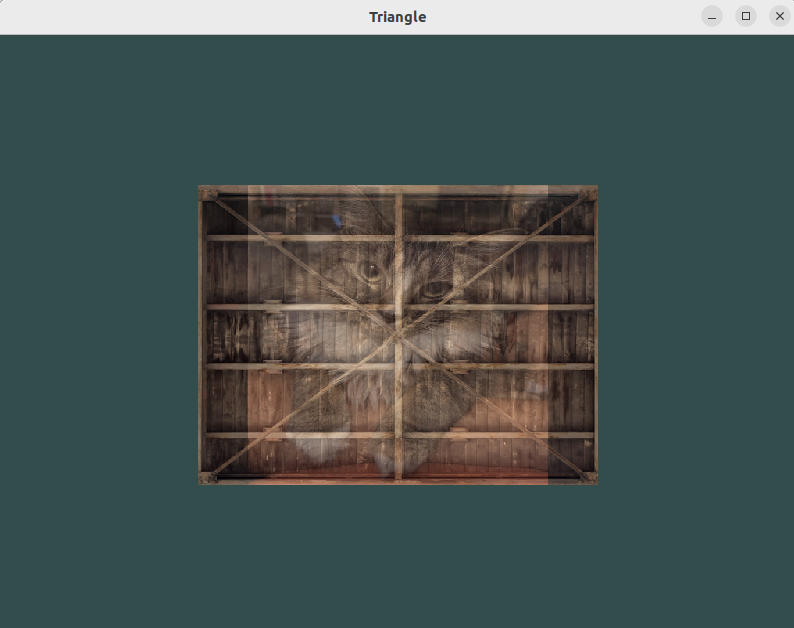

Learn OpenGL 5
Texture
Github source code: link
learning materials: learnopengl
Introduction
A texture is a 2D image (or 1D or 3D) used to attach to an object. In order to map a texture to a triangle, we need to tell each vertex of the triangle a texture coordinate. By doing this, the fragment shader knows how to sample the texture and perform the interpolation.
Texture coordinates range from [0, 1]. It differs from the default OpenGL normalized devices coordinates.

Create texture
Textures can be loaded from external files such as .png, .jpeg, etc. Then they can be further transformed into OpenGL readable texture buffers. There is an easy-to-use image library that can support popular image formats stb_image. It is a header-only file and can be easily added to our project.
1 |
|
Similar to what we have done for VBO and EBO, we also need to create texture buffer, bind texture buffer, set texture parameters and copy data to texture buffers.
- generate texture buffer
- bind texture buffer
- set parameters
- copy data to texture buffer
- generate mipmap (a collection of texture images)
generate texture buffer
1 | unsigned int texture; |
bind texture
1 | glBindTexture(GL_TEXTURE_2D, texture); |
set parametersGL_TEXTURE_WRAP_S and GL_TEXTURE_WRAP_T are used for texture wrapping. To handle coordinates outside the range of [0, 1], OpenGL offers several options.
- GL_REPEAT
- GL_MIRRORED_REPEAT
- GL_CLAMP_TO_EDGE
- GL_CLAMP_TO_BORDER

GL_TEXTURE_MIN_FILTER and GL_TEXTURE_MAG_FILTER are used for texture filtering. Most common interpolation methods are GL_NEAREST and GL_LINEAR. If you are familiar with image processing, they should be easy for you. GL_TEXTURE_MIN_FILTER is used when scaling down while GL_TEXTURE_MAG_FILTER for scaling up.
1 | glTexParameteri(GL_TEXTURE_2D, GL_TEXTURE_WRAP_S, GL_CLAMP_TO_EDGE); |
copy data to texture buffers
1 | glTexImage2D(GL_TEXTURE_2D, 0, GL_RGB, width, height, 0, GL_RGB, GL_UNSIGNED_BYTE, data); |
generate mipmapmipmap are precomputed, optimized collection of textures used to improve the rendering quality and performance of textured surfaces, especially when those surfaces are viewed from a distance or at different levels of detail. Objects at far distance can be rendered with small resolution textures, which can reduce memory. An example of mipmaps looks like this:

Just like texture filtering, interpolation can be performed between two mipmap levels to avoid obvious artifacts.
- GL_NEAREST_MIPMAP_NEAREST: takes the nearest mipmap to match the pixel size and uses nearest neighbor interpolation for texture sampling.
- GL_LINEAR_MIPMAP_NEAREST: takes the nearest mipmap level and samples that level using linear interpolation.
- GL_NEAREST_MIPMAP_LINEAR: linearly interpolates between the two mipmaps that most closely match the size of a pixel and samples the interpolated level via nearest neighbor interpolation.
- GL_LINEAR_MIPMAP_LINEAR: linearly interpolates between the two closest mipmaps and samples the interpolated level via linear interpolation.
NOTE: mipmap only works for downscaling. Texture magnification doesn’t use mipmaps.
1 | glTexParameteri(GL_TEXTURE_2D, GL_TEXTURE_MIN_FILTER, GL_LINEAR_MIPMAP_LINEAR); |
To generate mipmaps is easy.
1 | glGenerateMipmap(GL_TEXTURE_2D); |
Apply textures
1 | float vertices[] = { |

Since the vertex attributes are changed, we also need to update our vertex attribute pointer.
1 | // position attribute |
Shaders
vertex shader passes texture coordinates to fragment shader.
1 |
|
fragment shader reads texture coordinates from vertex shader and performs operations. Fragment shader is able to access the texture objects using uniform sampler2D. In our host program, we can later assign different textures to it. texture is a built-in function to sampling texture from coordinates.
1 |
|
Texture units
Texture units allow us to use multiple textures in our shaders by assigning texture units to different samplers we previous defined. The default texture unit is 0 and is activated by default. OpenGL should have a at least a minimum of 16 texture units for you to use. To activate others:
1 | glActiveTexture(GL_TEXTURE0); |
To enable texture units in the shader program, we need to set their values in our host program.
1 | // activate shader program before we can setup uniforms |
Demo
The demo mixes two textures, and the up and down keys will change the transparency of the cat image. Checkout the source code on my github.
 


References
Learn OpenGL 5